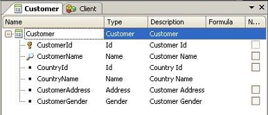
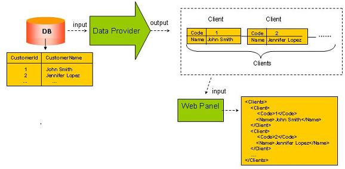
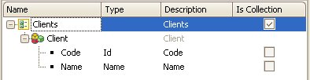
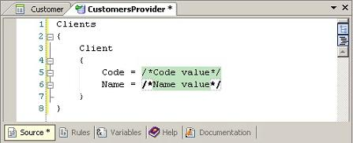
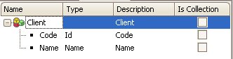
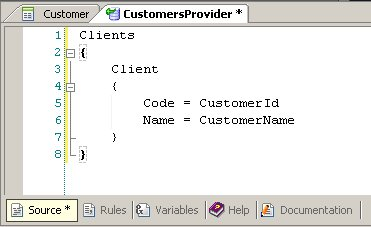

A Data Provider is a GeneXus object aimed at providing data collections (for example, a list of customers) or a data structure (for example, customer data) in an easy and high-level, declarative way.  You need to load the customers' database into a collection to send it to another object, such as a Web Panel, for example, or any other object:  First, you have to define the SDT to load the customers. The first consideration is that you cannot name the SDT with the same name as the transaction (it's not allowed), so you will call it 'Clients'. A second consideration is about the fact that you have two ways to work with collections. As you will see, you can choose any of them. First optionDefining the 'Clients' collection SDT:  Next, you have to create the Data Provider. Call it 'CustomersProvider'. In order to work less, after creating the Data Provider we can drag the 'Clients' SDT and the Source will look as follows:  You only have to fill the values on the right with CustomerId and CustomerName, respectively.
The rest is easy and familiar. From the object that requires the customer list, i.e. the Web Panel of the image above, we only have to define a variable of 'Clients' SDT data type to receive the output of the Data Provider and, for example, later convert it to XML format: &clients = CustomersProvider() &xml = &clients.toXML() See more Using Data Providers in Other GX Objects Second optionDefining the 'Client' SDT:  As in the previous option, suppose now you have to create the 'CustomersProvider' Data Provider. Doing the same as before, after dragging the 'Client' SDT to the Source area, you will have the following:
Note that changing 'Collection' to True introduces a new 'Collection Name' Property. You have to enter a name and then change the Source, adding a group with that name as a root:  The rest is similar to the first option (defining the &clients variable as a collection of the 'Client' SDT data type). |
| Backlinks | ||
| Category:Data Provider object | Defining a Data Provider | HowTo: Using the Infer Structure property of a Data Provider |